14
July
初めてのウェブサイト制作
フォルダー構成
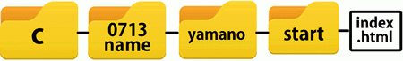
テキスト入力
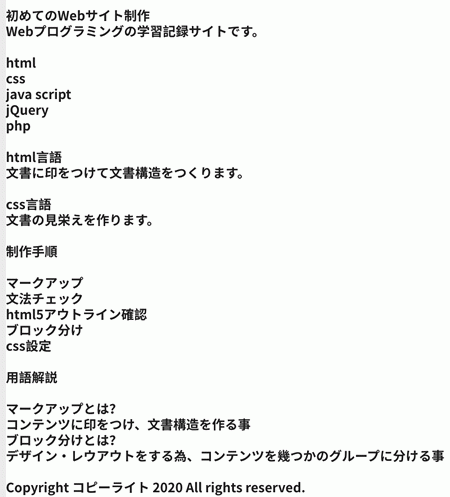
imgフォルダー追加
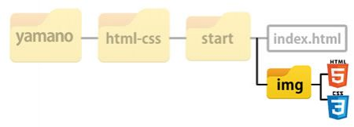
使用画像

マークアップ後
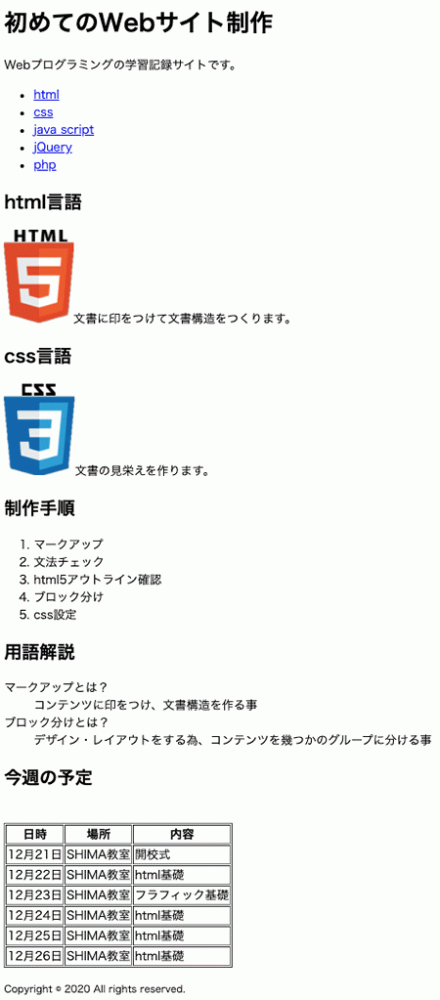
予定追加
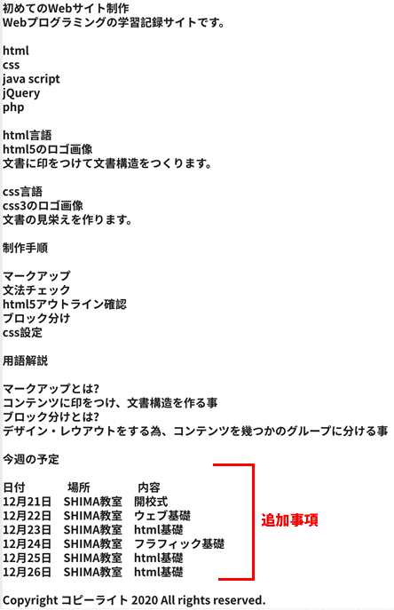
css設定例
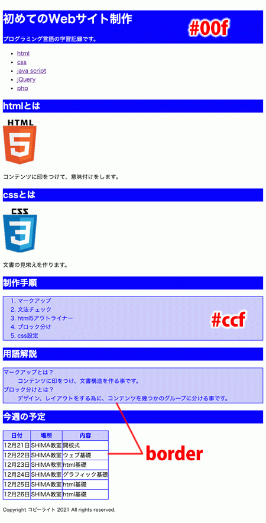
フォルダー追加
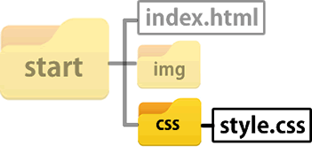
ヘッダー背景画像
使用画像
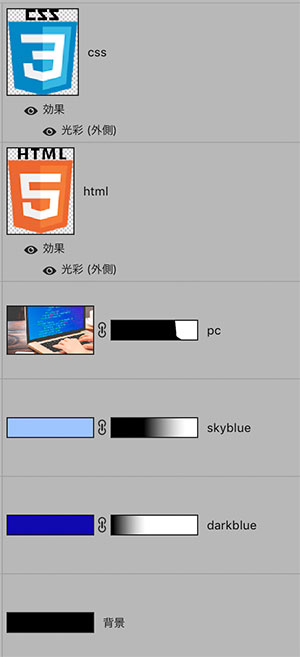
完成イメージ
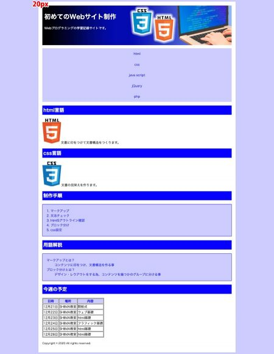
初めてのプログラミング追加テキスト
html
HTML5とはHTMLのバージョン5、改訂第5版のことです。初期のHTML1が開発されたのが1993年、それからバージョンアップを重ね1999年12月にバージョンアップされたHTML4が開発されました。
このHTML4が昨今のホームページを作る言語としてWEBを支えてきました。そして2014年10月28日にHTML5が発表されました。
css
ウェブページの見栄えを作る言語として使われている従来のCSS(スタイルシート)に、新しく便利な仕様を加えた規格のことです。 従来のCSSとも互換性があるため、バージョンはあまり気にせずに使えます。
CSS3とはスタイルシートのバージョン(Level)3のことで、新しい便利な仕様がたくさん使える規格。
画像フロート処理
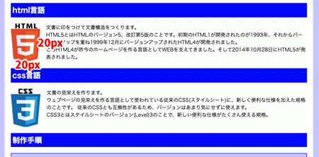
- /* Main contents */
- /* 画像の横にテキスト配置 */
- main img{
- float: left;
- margin: 0 20px 20px 0;
- }
- /* 回り込み停止 */
- h2{
- clear:both;
- }
navigationのバリエーション
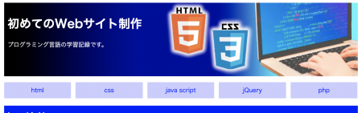
2カラムレイアウト
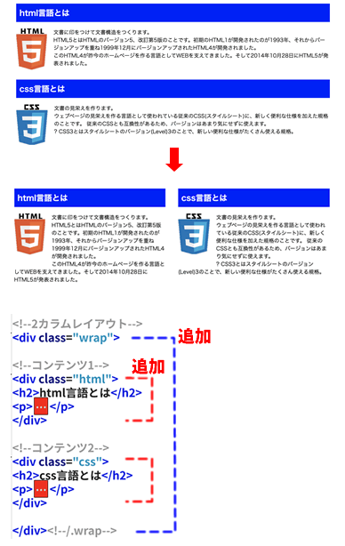
レスポンシブ設定
{kind=link}
プロフィール頁
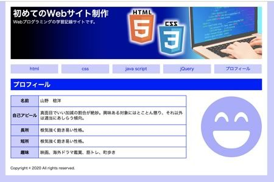
使用テキスト
名前
自己アピール
長所
短所
趣味
スマホメニュー
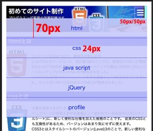
html(9/17)
- <!DOCTYPE html>
- <html lang="ja">
- <head>
- <meta charset="utf-8">
- <title>初めてのWebサイト制作</title>
- <meta name="desctiption" content="プログラミング言語の学習記録です。">
- <meta name="viewport" content="width=device-width,initial-scale=1">
- <link rel="stylesheet" href="css/style.css">
- </head>
- <body>
-
- <div>
-
- <!-- Header -->
- <header>
- <h1>初めてのWebサイト制作</h1>
- <p>プログラミング言語の学習記録です。</p>
- </header>
- <!-- Navigation -->
- <nav>
- <ul>
- <li><a href="#">html</a></li>
- <li><a href="#">css</a></li>
- <li><a href="#">java script</a></li>
- <li><a href="#">jQuery</a></li>
- <li><a href="#">php</a></li>
- </ul>
- </nav>
-
- <!-- sp btn -->
- <div class="btn"><i class="fas fa-bars"></i></div>
-
- <!-- Main Contents -->
- <main>
-
- <h2>htmlとは</h2>
- <img src="img/html_on.png" alt="html5のロゴ画像">
- <p>コンテンツに印をつけて、意味付けをします。</p>
-
- <h2>cssとは</h2>
- <img src="img/css_on.png" alt="cssのロゴ画像">
- <p>文書の見栄えを作ります。</p>
-
- <h2>制作手順</h2>
- <ol>
- <li>マークアップ</li>
- <li>文法チェック</li>
- <li>html5アウトライナー</li>
- <li>ブロック分け</li>
- <li>css設定</li>
- </ol>
-
- <h2>用語解説</h2>
- <dl>
- <dt>マークアップとは？</dt>
- <dd>コンテンツに印をつけ、文書構造を作る事です。</dd>
- <dt>ブロック分けとは？</dt>
- <dd>デザイン、レイアウトをする為に、コンテンツを幾つかのグループに分ける事です。</dd>
- </dl>
-
- <h2>今週の予定</h2>
- <table>
- <tr><th>日付</th><th>場所</th><th>内容</th></tr>
- <tr><td>12月21日</td><td>SHIMA教室</td><td>開校式</td></tr>
- <tr><td>12月22日</td><td>SHIMA教室</td><td>ウェブ基礎</td></tr>
- <tr><td>12月23日</td><td>SHIMA教室</td><td>html基礎</td></tr>
- <tr><td>12月24日</td><td>SHIMA教室</td><td>グラフィック基礎</td></tr>
- <tr><td>12月25日</td><td>SHIMA教室</td><td>html基礎</td></tr>
- <tr><td>12月26日</td><td>SHIMA教室</td><td>html基礎</td></tr>
- </table>
-
- </main>
- <!-- Footer -->
- <footer>
- <p><small>Copyright コピーライト 2021 All rights reserved.</small></p>
- </footer>
-
- </div>
-
- </body>
- </html>
プロフィール頁html
- <body id="profile">
-
- <div class="container">
-
- <!--ヘッダー-->
- <header>
- <h1>初めてのWebサイト制作</h1>
- <p>Webプログラミングの学習記録サイトです。</p>
- </header>
-
- <!--ナビゲーション-->
- <nav>
- <ul>
- <li><a href="index.html">html</a></li>
- <li><a href="#">css</a></li>
- <li><a href="#">java script</a></li>
- <li><a href="#">jQuery</a></li>
- <li><a href="profile.html">プロフィール</a></li>
- </ul>
- </nav>
-
- <!--メインコンテンツ-->
- <main>
-
- <h2>プロフィール</h2>
- <div class="wrap">
- <table>
- <tr>
- <th>名前</th><td>山野 稔洋</td>
- </tr>
- <tr>
- <th>自己アピール</th><td>真面目でいい加減の割合が絶妙。興味ある対象にはとことん懲り、それ以外は適当にあしらう傾向。</td>
- </tr>
- <tr>
- <th>長所</th><td>根気強く飽き易い性格。</td>
- </tr>
- <tr>
- <th>短所</th><td>根気強く飽き易い性格。</td>
- </tr>
- <tr>
- <th>趣味</th><td>映画、海外ドラマ鑑賞、筋トレ、町歩き</td>
- </tr>
- </table>
- <i class="fas fa-laugh-beam"></i>
- </div>
-
- </main>
-
- <!--フッター-->
- <footer>
- <p><small>Copyright © 2020 All rights reserved.</small></p>
- </footer>
-
- </div>
-
- </body>
css(9/17)
- @charset "utf-8";
-
- /* コンテンツ中央揃え */
- div{
- width: 960px;
- margin: 0 auto;
- }
-
- /* ヘッダー、h2見出し */
- header,h2{
- background-color: #00f;
- color: #fff;
- padding: 10px;
- }
-
- /* Navigation */
- nav ul{
- list-style: none;
- padding-left: 0;
- }
- nav li{
- text-align: center;
- }
- nav a{
- text-decoration: none;
- background: #ccf;
- color: #00f;
- display: block;
- padding: 10px 0;
- }
- nav a:hover{
- background-color: #00f;
- color: #fff;
- }
-
- /* 作業手順、用語解説 */
- ol{
- padding: 20px 20px 20px 40px;
- }
- dl{
- padding: 20px;
- }
- ol,dl{
- background-color: #ccf;
- color: #00f;
- border: 1px solid #00f;
- }
-
- /*今週の予定*/
- table{
- border-collapse: collapse;
- }
- th,td{
- border: 1px solid #00f;
- padding: 5px;
- }
- th{
- background-color: #ccf;
- }
-
- /* プロフィール頁css */
- #profile table{
- width:calc(100% - 250px);
- }
- #profile th{
- width:6em;
- }
- #profile td{
- line-height: 1.3;
- }
- /* 顔アイコン */
- #profile i{
- font-size: 240px;
- color:#aaf;
- }
- /* メインコンテンツ下余白 */
- #profile main{
- margin-bottom: 30px;
- }
-
- @media screen and (max-width:767px) {
-
- header{
- background-size: cover;
- height: 100px;
- text-shadow: 1px 1px 2px #000;
- }
- h1{
- font-size:28px;
- }
- nav{
- /* display: none; */
- position: absolute;
- width:calc(100% - 40px);
- top:77px ;
- }
- nav ul{
- display:block;
- }
- nav li{
- width:auto;
- line-height: 70px;
- font-size: 24px;
- border-bottom: 1px solid #00f;
- }
- nav a{
- background: rgba(200,200,255,0.9);
- }
-
- /* ハンバーガーメニュー */
- .btn{
- display: block;
- border:1px solid #fff;
- width:50px;
- line-height: 50px;
- color: #fff;
- /* background: rgba(0, 0, 0, 0.3); */
- text-align: center;
- border-radius: 5px;
- font-size: 35px;
- position: absolute;
- top:25px;
- right: 25px;
- }
-
- .wrap{
- display: block;
- }
- .html,.css{
- width: auto;
- }
-
- /* プロフィール頁 */
- #profile table{
- width:100%;
- margin-bottom: 20px;
- }
- #profile i{
- display: block;
- font-size: 300px;
- text-align: center;
- /* width: 300px;
- margin: 0 auto; */
- }
-
- }